Огляди · журнал «ДентАрт» 2025 №4
Екструзії в кореневих каналах. Реакція перирадикулярних тканин і можливі ускладнення
EXTRUSIONS DURING ROOT CANAL FILLING: PERIRADICULAR TISSUE REACTIONS AND POSSIBLE COMPLICATIONS
Станіслав Геранін, стоматологічний центр «Махаон» (м. Полтава, Україна)Резюме. Пломбування кореневих каналів є важливою складовою успішного ендодонтичного лікування. Герметичне апікальне запечатування запобігає апікальному підтіканню і виникненню або рецидиву апікального періодонтиту. Однак можливі помилки при механічній обробці й обтурації кореневих каналів можуть призводити до ризику екструзії матеріалів за межі апікального отвору. У статті подано огляд факторів ризику, ускладнень на ендодонтичному прийомі і шляхів їх усунення.
Ключові слова: пломбування кореневих каналів, екструзія силера, ускладнення при ендодонтичному лікуванні.
Екструзії пломбувального матеріалу і процедуральні помилки
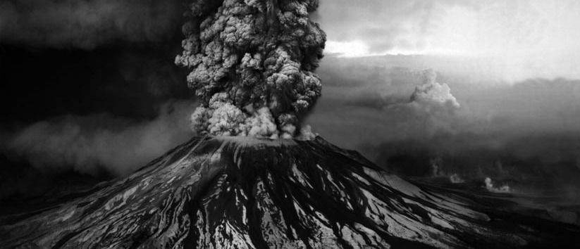
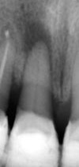
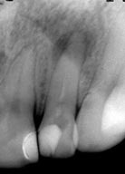
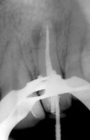
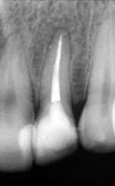
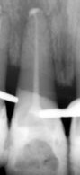
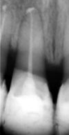
Фото 1. Симптоматичний апікальний періодонтит зуба 22: а) на діагностичному інтраоральному знімку – перирадикулярні вогнища кісткової деструкції; б) стан після пломбування кореневого каналу – обтурація на носії (Gutta-Core); в) загоєння вогнищ деструкції через 3 роки.
Фото 2. Симптоматичний апікальний періодонтит зуба 11: а) на діагностичному інтраоральному знімку – ознаки апікального періодонтиту; б) стан після пломбування кореневого каналу – техніка безперервної хвилі; в) загоєння вогнища деструкції через 17 міс.
До завдань ендодонтичного лікування належать очищення системи кореневих каналів, контроль і зниження бактеріального навантаження, а також усунення клінічної симптоматики. При обтурації пломбувальний матеріал має досягти апікальної частини кореня – без просування в періапікальні тканини і прилеглі структури (фото 1). На жаль, іноді надмірна механічна обробка кореневого каналу машинними і ручними інструментами веде до ризику екструзії за межі апікального звуження інфікованої тирси, іригаційних розчинів, силера, матеріалів для тимчасового пломбування і мікроорганізмів.1 Зазвичай незначні екструзії нормально сприймаються перирадикулярними тканинами (фото 2). Однак водночас можуть виникати певні клінічні симптоми, такі як біль, набряк, парестезії й анестезія, особливо в разі виведення пломбувального матеріалу поблизу або при безпосередньому контакті зі структурами нервових волокон.2 Багато факторів можуть підвищувати ризик екструзії силера, наприклад, надмірна інструментальна обробка, складна анатомія системи кореневих каналів, велика кількість силера, надмірне зусилля при компакції, гідростатичний тиск, використання каналонаповнювача, зуби з незавершеним формуванням верхівки і резорбцією апікальної частини кореня.3,4
Деформація апікального звуження створює труднощі в коректній адаптації пломбувального матеріалу. За наявності апікального періодонтиту верхівкова частина кореня зазнає резорбції,5–7 що погіршує якість апікального запечатування. Апікальне підтікання і потрапляння ексудату в кореневий канал створюють сприятливі умови для росту бактерій. Надмірна інструментація призводить до потрапляння тирси інфікованого дентину і залишків некротизованої пульпи в перирадикулярні тканини (фото 3). Бактерії, запечатані в дентинну тирсу, фізично захищені від впливу імунних захисних механізмів, що погіршує загоєння.8,9
У більшості випадків екструзія силера при надмірній інструментальній обробці описується в премолярах і молярах.10
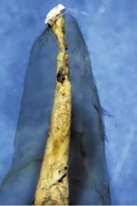
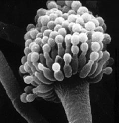
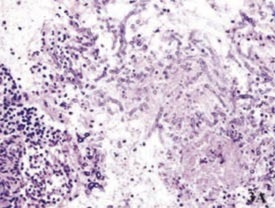
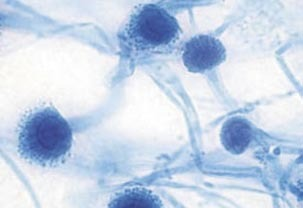
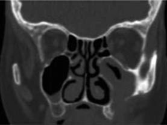
Фото 3. Апікальна третина кореневого каналу з обтураційним матеріалом (знебарвлений зразок). Courtesy of A. Castellucci.
Фото 4. Aspergillus fumigatus.
Фото 5. Аспергильоз верхньощелепного синуса (Peral-Cagigal і співавт., 2014): а) гістологічне дослідження (забарвлення ГЕ). Рясні грибкові гіфи Aspergillus spp., гранульоматозне запалення, еозинофіли і гігантські клітини; б) мікроморфологія A. fumigatus (100x; забарвлення лактофеноловий синій); в) КТ затемнення в лівому верхньощелепному синусі з явищами кісткової деструкції передньолатеральної стінки.
Існують 4 основні причинні фактори, що призводять до пошкодження тканин і виникнення перелічених симптомів:
- механічна травма внаслідок некоректної інструментації (наприклад, перфорація нижньощелепного каналу);
- хімічний – нейротоксичний ефект матеріалів, що використовуються для очищення і пломбування кореневих каналів;
- компресійний феномен від присутності філера або силера в нижньоальвеолярному каналі;
- перегрів тканин при недотриманні правил техніки гарячої компакції.2,11,12
Усе це може спровокувати запальний процес, що призводить до невдалого результату лікування.
Ускладнення при екструзіях на верхній щелепі
На верхній щелепі силер може потрапити в синус і призводити до гаймориту, включно з аспергильозом, парестезіями і неврологічними ускладненнями.13 Вважається, що виведений матеріал не залишається в одній конкретній зоні пазухи і виявляє властивості стороннього тіла.14 Стаз секреції призводить до виникнення анаеробних умов, сприятливих для росту спор Aspergillus (фото 4). У більшості випадків аспергильоз пов'язаний із впливом пломбувальних матеріалів на основі цинк-оксид-евгенолу (ЦОЕ) і параформальдегіду, що потрапили в синус. Як результат, виникає запальна реакція і блокування руху війчастого епітелію (фото 5).15–17
В одному з клінічних випадків описані симптоми: чутливість при жуванні і перкусії зуба 16 у пацієнтки 25 років протягом кількох років після ендолікування. При радіологічному дослідженні виявлено силер, виведений у верхньощелепний синус, а також наявність рентгенконтрастної маси поблизу проходу носової порожнини. Поставлено діагноз: аспергильоз верхньощелепного синуса з апікальним періодонтитом зуба 16 внаслідок екструзії силера. Лікування включало апікальну хірургію з ретроградним пломбуванням щічних кореневих каналів зуба 16, антроскопію, а також видалення стороннього тіла з верхньощелепної пазухи.13
Ускладнення при екструзіях на нижній щелепі
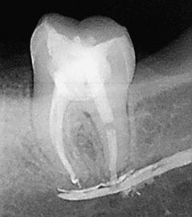
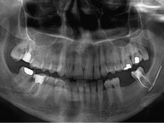
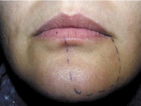
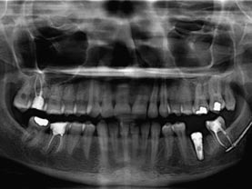
Фото 6. Клінічний випадок екструзії силера в нижньощелепний канал при ендодонтичному лікуванні зуба 37 (Gonzalez-Martin і співавт., 2010): а) контрольний знімок після лікування. Визначається наявність силера, виведеного в нижньощелепний канал; б) панорамна радіограма наступного дня після потрапляння пасти в періапікальні тканини зуба 37 і нижньоальвеолярний канал; в) зона анестезії ментального нерва, позначена на шкірі через 3,5 роки; г) панорамна радіограма через 3,5 роки після лікування. Визначається наявність пасти в періапікальній зоні зуба 37 і нижньоальвеолярному каналі.
До ускладнень на нижній щелепі можна віднести біль, набряк і парестезії. Вважається, що післяопераційний біль напряму пов'язаний із запальною реакцією в періапікальних тканинах і може тривати від кількох годин до тривалішого періоду після ендолікування.18 Першим симптомом виведення пломбувального матеріалу в нижньощелепний канал є спонтанний біль у пацієнта при обтурації кореневого каналу, який не минає після закінчення дії локального анестетика.19 Сильний біль ендодонтичної природи після екструзії силера потребує ранньої діагностики і негайних заходів для зниження ризику незворотного пошкодження нервових волокон.20
Біль може мати спонтанний, періодичний або постійний характер. Тригерами можуть стати прийом їжі, розмова, холодні або гарячі подразники. Пацієнт може також скаржитися на відчуття печіння, поколювання або тиск у зубах.21 Біль може супроводжуватися ознаками локального запалення – біль при перкусії, а також пальпації альвеолярного відростка по щічній поверхні або комбінацією ознак механічної травми і запалення нижньощелепного нерва з болем або онімінням нижньої губи.22 Парестезія може бути наслідком некоректної інструментальної обробки – з огляду на тиск обтураційних матеріалів у мандибулярному каналі,23,24 нейротоксичних ефектів, зворотного або незворотного блокування провідності нервових імпульсів або порушення потенціалу мембрани нервового волокна.1,25 У деяких пацієнтів розвивається персистентна анестезія.26,27
Гостра запальна реакція в періапікальних тканинах розвивається як результат екструзії вмісту кореневого каналу, хімічної або мікробної природи. Механічні або хімічні пошкодження зазвичай пов'язані з надмірною інструментальною обробкою, апікальною екструзією іригантів або силерів.8
Усі силери певною мірою мають нейротоксичний ефект, який є результатом впливу компонентів, що входять до їхнього складу.1,28 До найтоксичніших належать силери, що містять евгенол і параформальдегід (Ендометазон Ivory і N2), які можуть порушувати провідність нервових волокон.29–31 Параформальдегід є нейротоксином і може викликати деструкцію аксона за рахунок своєї газоподібної природи.6 Ендометазон може призвести до незворотного інгібування проведення нервового імпульсу діафрагмального нерва у щурів.29 Інгібувальний ефект ендометазону на сідничний нерв у щурів зворотний, але виразніший порівняно з Sealapex і силерами на основі гідроокису кальцію.31
У літературі описані випадки екструзії ендометазону в нижньощелепний канал з виникненням пролонгованої анестезії й онімінням у ділянці підборіддя і нижньої губи. Застосовувалося хірургічне видалення силера і декомпресія нерва. Через певний час після хірургічного втручання пацієнти відчували значне поліпшення, аж до зникнення всіх симптомів.1,32
При екструзії силерів у зоні нижніх премолярів можуть виникнути парестезія в боковій ділянці нижньої щелепи, оніміння нижньої губи і відчуття поколювання по вестибулярній поверхні ясен.33 Призначається протизапальна терапія протягом 3–4 тижнів з динамічним спостереженням. Описано зникнення симптоматики через 6 місяців.34 В описаному випадку виникнення болю і постійної анестезії після ендолікування й екструзії із застосуванням ЦОЕ силера Pulp canal sealer симптоматика зникла тільки після хірургічного лікування.35
Потрапляння силера AH 26 у нижньощелепний канал пов'язане з появою болю і парестезії. Призначення антибіотиків і нестероїдних протизапальних засобів не поліпшує стан (фото 6).36 Хірургічне видалення силера з декомпресією нервового волокна дає позитивний результат через 5–6 місяців.35
Свіжозамішаний AH 26 має подразнювальний вплив середнього ступеня з огляду на вивільнення невеликої кількості формальдегіду й амінів у процесі застигання. У AH Plus цей показник значно нижчий. Однак AH Plus також може викликати цитотоксичні реакції38 при екструзії в нижньощелепний канал22 за рахунок компонента bisphenol A.39 Ці компоненти відповідальні за виражену первинну реакцію і післяопераційні болі при екструзії силера.3,40 Хімічні медіатори запалення викликають больову реакцію при прямому впливі на чутливі нервові волокна. Частинки силера фагоцитуються макрофагами і переміщуються по периметру запальної реакції. У результаті цього з часом макрофаги можуть повністю усунути силер з періапікальної зони – з подальшим загоєнням і повним зникненням подразнення і больових відчуттів.41
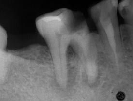
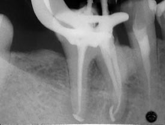
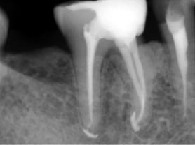
Фото 7. Асимптоматичний апікальний періодонтит зуба 46: а) на діагностичному інтраоральному знімку – вогнища деструкції в ділянці апікальної і фуркаційної зон; б) екструзія пломбувального матеріалу в періапікальну зону при використанні обтураторів на носії; в) загоєння перирадикулярних вогнищ деструкції. Стан через 4 роки.
На відміну від цитотоксичних силерів, застосовуваних у минулому, більшість сучасних пломбувальних матеріалів виявляють цитотоксичність тільки до застигання.42–44 Таким чином, навіть якщо силер перебуває в кореневому каналі, виникає запальна реакція різної інтенсивності в зоні контакту силера з вітальними апікальними і перирадикулярними тканинами. При екструзіях гістологічні дослідження показали, що запальна реакція виразніша в найближчі терміни.6 Однак з часом більшість силерів втрачають свій подразнювальний вплив і стають відносно інертними.45,46 При тривалих термінах за відсутності інфекції відбувається проліферація сполучної тканини з вмістом поодиноких запальних і багатоядерних клітин навколо виведеного силера.6
Біосумісність пломбувального матеріалу дуже важлива для стимуляції реорганізації пошкоджених періапікальних тканин при безпосередньому контакті з матеріалом.47 У зубах з апікальним періодонтитом силери, що мають антибактеріальні властивості і не подразнюють апікальні та перирадикулярні тканини, можуть також стимулювати відкладення мінералізованої тканини в зоні апікального звуження, сприяючи загоєнню.48 Показано хорошу реакцію періапікальних тканин на AH Plus, а також відкладення мінералізованої тканини на стінках кореневого каналу і мінералізацію м'яких тканин в апікальній зоні (фото 7).49 Крім цього, гістологічно виявлено, що виведений AH 26, який первинно призводить до індукції хронічної запальної періапікальної реакції, через 6 місяців фагоцитується макрофагами і переміщується по периметру запальної реакції, а період резорбції залежить від кількості виведеного матеріалу й індивідуальних відмінностей імунної реакції в ділянці періодонта (фото 8).41,50
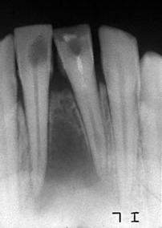
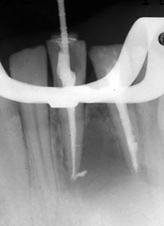
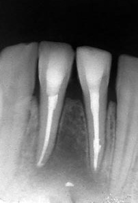
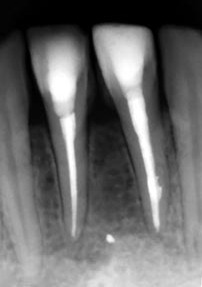
Фото 8. Симптоматичний апікальний періодонтит зубів 41, 31: а) на діагностичному інтраоральному знімку – обширне вогнище деструкції, ознаки внутрішньої резорбції в зубі 31; б) стан після пломбування кореневих каналів: зуб 41 – обтурація на носії, зуб 31 – техніка безперервної хвилі; в) процес загоєння вогнищ деструкції. Стан через 8 місяців. Переміщення виведеного матеріалу при ремоделюванні кісткової тканини; г) стан через 4,5 роки. Відсутність клінічної і суб'єктивної симптоматики. Залишки матеріалу візуалізуються в кістковій тканині.
Таким чином, основною причиною ендодонтичних невдач є не потенційне виведення силера, а загострення, викликане гострим запаленням і апікальною екструзією інфікованої тирси в періапікальні тканини в процесі хемо-механічної обробки каналу. Частота таких загострень варіює від 1,4 % до 16 %, а їх інтенсивність залежить від кількості й вірулентності виведених мікроорганізмів.51 Проштовхування мікроорганізмів і продуктів їх життєдіяльності в перирадикулярні тканини може спровокувати біль і набряк, а також запальну реакцію протягом кількох годин або днів після ендодонтичного лікування.52
Присутність певних видів бактерій, наприклад Porphyromonas, Prevotella і Finegoldia, може визначати характер перебігу перирадикулярних процесів.53 Peptostreptococcus, Eubacterium, Porphyromonas endodontalis, P. gingivalis і Prevotella пов'язують з болями при перкусії.54
Реакція стороннього тіла
Ще одна причина невдалого ендолікування – реакція стороннього тіла. Пломбувальний матеріал, виведений у періапікальну зону, викликає реакцію стороннього тіла в сполучній тканині.55 Першопричиною ендодонтичних невдач є присутність мікробного фактора, однак реакція стороннього тіла може посилювати або підтримувати симптоматику.56 Механізм цієї реакції схожий на фагоцитоз. Дрібні частинки й ексудат викликають локальну реакцію тканин, що характеризується присутністю макрофагів і багатоядерних гігантських клітин, а великі скупчення силера інкапсулюються.28 Однак при незначній екструзії сучасні силери не виявляють токсичності, а також не провокують реакції стороннього тіла.57,58
При виникненні симптоматики (больові відчуття) після екструзії силера перше рішення – це динамічне спостереження з призначенням протизапальних препаратів.34,36,59,60 Використання біосумісних препаратів не потребує негайного хірургічного втручання, оскільки з часом вони зазнають резорбції.33 Хірургічне видалення пломбувального матеріалу з анатомічних структур одночасно з апікальною хірургією є найбільш рекомендованим підходом за наявності тривалої больової реакції і набряку, а також у разі болю і парестезії, якщо силер містить токсичні компоненти (параформальдегід) і радіологічне дослідження показує збільшення періапікального вогнища.
При екструзії силера, що містить евгенол (Endomethasone) і параформальдегід, у нижньощелепний канал його необхідно видалити звідти якнайшвидше, оскільки відстрочка хірургічного втручання і вилучення нерезорбованого фенолвмісного силера навіть на 4 дні може призвести до незворотної парестезії.61,62 При парестезії медикаментозна терапія включає кортикостероїди, протизапальні засоби і вітамінні комплекси. При периферичній нейропатії рекомендовані комбінації препаратів, які швидко зменшують біль і знижують парестезії: дулоксетин і прегабалін, а також преднізон і прегабалін.60 Цей протокол був використаний у клінічному випадку при екструзії силера AH Plus з виникненням гострого болю в зубі, а також онімінням нижньої губи справа після ендодонтичного лікування. Були призначені препарати преднізон, прегабалін і динамічне спостереження. Через 6 тижнів усі симптоми зникли.20,60
Систематичний огляд показав, що в більшості випадків з порушенням чутливості після екструзії силера необхідно призначати хірургічне лікування або комбінацію нехірургічного і хірургічного лікування. Незважаючи на це, повне відновлення при нехірургічному втручанні вище (63 %) порівняно з хірургічним підходом (46 %). У більшості описаних випадків застосовувався параформальдегідвмісний силер (39 %), а також на основі епоксидних смол (29 %). Частота повного відновлення значно вища в разі застосування силерів на основі епоксидних смол (62 %) порівняно з параформальдегідвмісними матеріалами (27 %).63
У випадках екструзії силера хірургічне втручання може призначатися лише за наявності клінічної симптоматики або радіологічних ознак збільшення періапікальної деструкції.
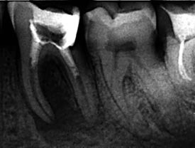
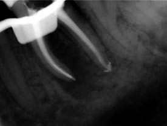
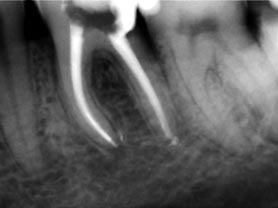
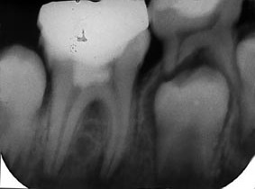
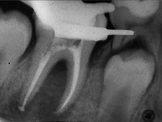
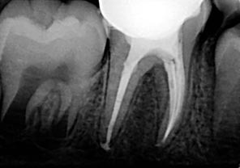
Фото 9. Симптоматичний апікальний періодонтит зуба 36: а) на діагностичному інтраоральному знімку – обширне вогнище деструкції, ендо-періо ураження; б) стан після пломбування кореневих каналів інжекторною технікою; в) загоєння перирадикулярних вогнищ деструкції. Стан через 17 місяців.
Фото 10. Симптоматичний апікальний періодонтит зуба 46 після неуспішної вітальної терапії пульпи: а) на діагностичному інтраоральному знімку – ознаки апікального періодонтиту; б) стан після пломбування кореневих каналів – наявність екструзії пломбувального матеріалу в дистальній системі; в) загоєння вогнищ деструкції. Стан через 6 місяців.
Незважаючи на те, що наявність пломбувального матеріалу в перирадикулярній зоні не призводить до невдачі ендолікування, це може значно затримати процес загоєння.64 Щодо загоєння розчинення силера в апікальній зоні може стати перевагою – з огляду на створення простору для проростання сполучної тканини з подальшим відкладенням нових шарів цементу і звуженням апікального отвору і просвіту кореневого каналу.65 Розчинення силера, своєю чергою, при тривалих термінах є сприятливим фактором для апікальної перколяції і росту бактерій.66
Залишковий силер за межами кореневого каналу не завжди видно на інтраоральних знімках. Тільки гістологічне дослідження може дати остаточну відповідь на це питання. Цинк-оксидевгенольні силери швидше резорбуються порівняно із силерами на основі епоксидних смол. При коректному ендодонтичному лікуванні результат не залежить від виду виведеного силера. Це не означає, що екструзія є рекомендованою, оскільки при значному виведенні пломбувального матеріалу можуть виникати серйозні ускладнення.32,36,67 Успішність лікування при екструзії значно вища у випадках відсутності періапікальної патології порівняно з випадками наявності апікального періодонтиту.
На підставі численних досліджень можна зробити висновок, що екструзія силера не є фактором, який призводить до погіршення загоєння, а резорбція виведеного матеріалу не є обов'язковою для відновлення періапікальної деструкції (фото 9, 10).68–71 Слід розрізняти процеси резорбції і загоєння.72,73 Малоймовірно, що екструзія силера може стати причиною невдачі ендодонтичного лікування, тоді як основною проблемою є інфекція (фото 11).74

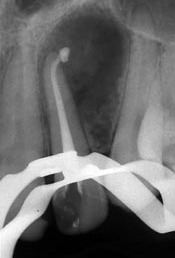
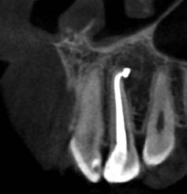
Фото 11. Симптоматичний апікальний періодонтит зуба 22: а) діагностичний зріз КЛКТ. Обширне перирадикулярне вогнище деструкції кістки; б) стан після пломбування кореневих каналів – техніка безперервної хвилі. Наявність екструзії пломбувального матеріалу; в) ознаки загоєння вогнища деструкції на КЛКТ. Стан через 1 рік 8 міс.
Детальний радіологічний аналіз (інтраоральні знімки в різних проєкціях, конуснопроменева комп'ютерна томографія), використання апекслокатора, створення коректного апікального упору і правильна техніка пломбування (компакції) допоможуть запобігти виведенню матеріалу за межі каналу.75